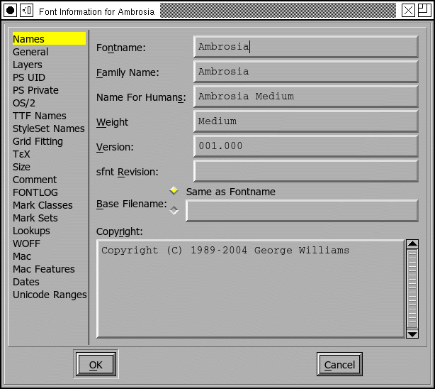
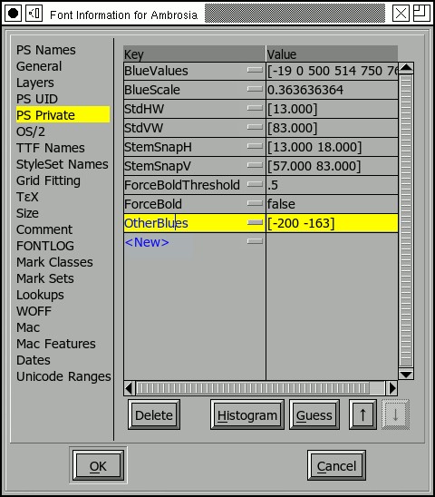
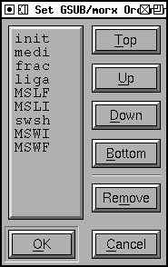
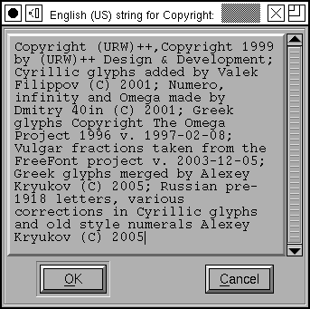
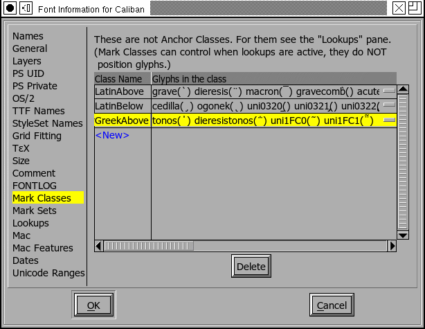

The Font Info dialog is available from all views. It allows you to name your font and various other useful bits of information. In a CID keyed font, things are more complex. Each CID keyed font is composed of man sub-fonts; this command works on the current sub-font while there is a separate command to access the information for the font as a whole -- that dialog looks the same. The dialog is composed of many different sub dialogs.
PostScript fonts have several different names, but basically there are two important ones: the family name (like Times) and the fontname (which is the family name with a bunch of modifiers like Bold Italic Condensed tacked on to the end. The FullName is designed to be read by humans, while the others are for machines, this name can contain spaces (like "New Century Schoolbook-Bold Condensed"). Finally there is the weight name. All of these names should be in ASCII. If you wish to enter names with characters outside this range look at the TTF Names Section.
The copyright field can contain whatever you want to put there, but it's a good place to put a copyright.
In most fonts the version field is a string (and so has minimal constraints on it), but in CID keyed fonts it must be a floating point number.
You may also specify a separate version number to be used in any sfnt generated from this database; this should be a floating point number. Or you may leave this field blank. If you leave it blank FontForge will generate a default value based on other version information specified elsewhere.
Normally when generating a font,
FontForge will use the fontname as the base for the default
filename of the font file (the base to which the extension is
added). But that is not always what you want. You may wish to
attach a version string to the fontname, or abbreviate it, etc.
The Base Filename field allows you to specify this
to fontforge.
Many of these names are similar to the english names of the TTF Names section. If nothing is specified in that section then the names specified here will be used by default in ttf files.
This sub dialog contains a rather random collection of settings.
The Ascent and Descent are (in this current definition) Macintosh concepts rather than PostScript, their sum, however, provides the size of the em-square and that is very much a postscript concept. For postscript fonts this number is set by strong convention to be 1000, while in most TrueType fonts it will be 2048 (also a convention, but TrueType claims rasterization is faster if the sum is a power of 2). Since both TrueType and Type1 (postscript) fonts represent numbers as 16-bit integers ascent and descent must be less than 32767. TrueType is more restrictive and requires their sum to be less than 16384.
If you change the size of the Em you may choose to have all
the outlines (and kerning info) scaled to have the same
proportion to the new value that they had to the old. Warning:
If your font has truetype instructions
scaling may break the font as entries in the 'cvt
' table will not be scaled.
The Italic Angle indicates the slant of the font. FontForge can attempt to guess a good value for you by looking at the stems of certain letters ("I" for instance).
The underline position and height provide a program using this font a hint as to where it should place a line if it wants to underline text printed in this font.
If you want your font to have vertical metrics (generally this means you are
working on a CJK font) then check the [*] Has Vertical
Metrics checkbox. This will enable the Vertical Origin
field, and will mean that when you generate a truetype or
opentype font a vertical metrics table will be added. The
Vertical Origin is the vertical offset from the origin of the
design coordinate system to the origin for the purposes of
vertical metrics.
Sadly the encoding is not always sufficient for understanding the font's behavior. For example a unicode font designed for a chinese system will look very different from a unicode font for a japanese system (The same unicode character may map to very different chinese or japanese glyphs). To handle this FontForge has the concept of "Interpretation".
When you create a new glyph in a font, fontforge will assign
it a name based on the current namelist.
You may control how many and what types of layers are available in your font.
Fonts may be either outlined or stroked, or type3. You may choose which kind of font you want.
You may also decide what kind of splines you want in the font in general, often all the layers will use the same type of splines (so there are radio buttons to make that easy), but it isn't required each layer may be in its own format.
If you mark a layer as quadratic (or check [*] All
layers Quadratic) then FontForge will use quadratic
Bézier splines for this
layer rather than cubic Béziers, this means that FontForge will
be using the native spline format of truetype rather than
postscript (or opentype). When FontForge generates a font it
will convert from whatever format is used internally to
whatever format is required for the font, so there will be no
problem if this is set incorrectly, but setting it correctly
for your font means you get a clearer idea of what the outlines
will look like. I find quadratic splines harder to edit with
because each spline is less flexible, but the advantage of
actually seeing what your truetype font will look like may
outweigh that.
You may also mark a layer as a foreground layer or a
background layer. Background layers can hold images. Pasting
into an empty glyph in a background layer will not set the
width. Splines in background layers do not make a glyph worth
outputting.
NOTE: Adobe now says that both XUID and UniqueID are unnecessary.
The XUID field is a collection of numbers separated by spaces and enclosed in brackets. This allows you to specify the extended unique ID of the font. If you have set the XUID preference entry then FontForge will assign values to all new fonts (by appending a number unique to this font to the end of your preference item). Adobe recommends that the XUID be changed every time the font is changed, so each time you generate a postscript font, that font's XUID (if present) will be incremented by 1 (This incrementing does not happen in CID-keyed fonts, where the XUID behavior is too complex for this simple trick). (The XUID field is only meaningful in PostScript fonts).
The UniqueID field is an older convention for the same
purpose as XUID. If you do not fill in this field then
FontForge will pick a random number for you in the allowable
range. If you want your font to have no unique id then give
this the value of -1. If you have talked to Adobe and been
assigned a real UniqueID then you may use this field, otherwise
leave it blank. (The UniqueID field is only meaningful in
PostScript fonts)
This sub-dialog shows most entries in the font's Private dictionary. The interesting things in this dictionary are mostly concerned with hints appropriate for the entire font. I shall not go into detail about the meanings of the various entries, that is best understood by reading Adobe's Type1 specification.
Don't try to change these until you understand what they mean.
The dialog is shown at right. It consists of a list of dictionary key/value pairs. The keys are on the left, values on the right. Generally you will want to use the standard PostScript keys (these are available from a pulldown list that appears when you press one of the little grey buttons).
Note: The values must be things which PostScript can parse.
This means that ForceBold must have a value of
"false" or "true", and "False" or "faux" will not work.
Similarly the decimal point in numbers must be "." (not ",").
If you enter a "," by mistake FontForge will convert it for
you.
For example the BlueValues entry specifies
certain key regions of the font in a vertical direction. For
instance it might contain the baseline serif, the x-height
serif, the cap-height serif. It is expressed as an array of
numbers, grouped in pairs. The first number of a pair is the
low end of the region and the second is the high end. So in the
example at right, the value of BlueValues is
[-20 0 437 457 583 603 623 643.
When the [Guess] button is enabled FontForge
thinks it can make a reasonable guess for the value of the
currently selected entry.
The [Histogram] button is similar, it will
bring up a dialog showing a
histogram of the values of an attribute of the font. The
hope is that this will allow you to pick a good value for the
entry.
You may also delete an entry from the dictionary with the
[Delete] button. Some entries (such as
BlueValues) must be present in any type1 font, but
you may still delete them. FontForge will simply guess at a
reasonable value when it needs to generate the font.
Certain keys affect things other than hints. The
lenIV entry controls how much random padding is
placed around the type1 strings when the font is generated.
Normally this will be 4, but if you want to save space (4 bytes
per glyph in pfb format, 8 bytes in pfa) you may choose another
value. The UniqueID key represents the font's Unique postscript
ID. If you provide a value here then FontForge will copy it
into the UniqueID field in the Font Dictionary. (this is
different from True Type's UniqueID. They perform the same
function but are formatted differently).
Some of these entries are only meaningful for PostScript
fonts, others will be used by the truetype
autoinstructor.
This sub dialog contains settings important for Windows platforms, most of these settings live in the 'OS/2' table of a truetype or opentype font. The pane also includes a few pieces of data that do not live in the 'OS/2' table but are logically related.
The weight class provides a numeric value describing the boldness of the font. A normal face will usually have a boldness of 400, and a bold face will usually be 700. This must be a number between 100 and 900.
The width class allows you to provide a numeric value saying how condensed or expanded this font is.
The PFM Family is used when generating PFM files and classifies the font into some rather broad categories (Serif, Sans, Monospace, Script, Decorative).
You can control whether you want to allow your font to be embedded into other documents (most commonly pdf). You can restrict it so that it can never be embedded, it can be embedded into documents that can be printed (but not edited), it can be embedded into documents that can be edited, or it can be embedded into an editable document and later extracted and installed on a different system. You can also control whether the document producer is allowed to extract the glyphs it needs and make a new font from them (which saves space) or whether they must include the entire font if they use any of it. Finally you can restrict the embedding so that only bitmap versions of the font may be embedded. (meaningful in CID keyed postscript fonts as well as TTF and OTF).
The "Vendor ID" is a four character ASCII field used to identify the creator of the font.
The IBM Family is another classification scheme for fonts.
Finally you may order lookups in the GSUB (or morx) table.
These entries are only meaningful in TrueType and OpenType
fonts (though the Embeddable entry (generally called FSType)
will be set on CID keyed fonts even if they are not in an
OpenType wrapper.
GSUB/morx
OrderingThis dialog allows you to control the order features in which are to be executed by the word processing program. If you have loaded an opentype or truetype font then the original order will be maintained. As you add more features they will appear at the bottom of the list (which may not be appropriate). You may select a feature name and use the buttons to move it up and down in the list. Things at the top of the list are executed first, things at the bottom last.
Caveat: Although
the OpenType spec claims that the execution of features
(actually lookups) will be ordered by their appearence in the
lookup table, MicroSoft claims that they will apply features in
the order that they think best. So the order specified in the
font may be ignored.
The Windows Ascent and Descent fields are badly defined in the OpenType spec, which says that they should express the maximum range of the Windows "ANSI" glyphs. If one uses this definition, non-"ANSI" glyphs are cropped. These should be the maximum range of all glyphs to avoid cropping. But even that will not always work. If you have a line with marks which are repositioned with GPOS, then the marks may be cropped, so Windows Ascent should include the maximum possible height of repositioned marks (or any other GPOS vertical repositioning feature).
This is too complex (and too ill defined) for FontForge to figure out, instead FontForge gives you a couple of options.
Both WinAscent and WinDescent should be positive numbers.
The Typographic Ascent and Typographic Descent are supposed to represent the line spacing of the font on the windows platform. Sadly very few applications actually use them (most applications use the Windows Ascent/Descent described above).
In traditional (Latin) typography, the unleaded line spacing should be 1em, and that is what Adobe recommends for these fields (they should sum to the Em-Size specified in the General pane). The Typographic Ascent should be the same as the font's Ascent, and the Typographic Descent should be the (negative) of the font's descent.
The "[*] Is Offset" checkboxes behave much as they do above, except they specify offsets from the font's ascent and descent rather than its bounding box.
The Typographic descent should be a negative number, the ascent a positive number.
You can also specify the default line gap, or leading between lines.
The mac uses a different set of fields for the same concepts, and stores them in the 'hhea' table rather than the 'OS/2'. The HHead Ascent and Descent are used to specify clipping (in some applications) and line spacing. They behave very much the way the Win Ascent & Descent behave (they are based on bounding box values). And the 'hhea' table has its own line gap field.
And if your font has vertical metrics enabled (See General above) you will be able to set the default spacing between vertical columns of text. (the equivalent to LineGap in vertical text).
See the FAQ for a
discussion on the complexities involved in setting the line
spacing. The 'BASE' table provides
a more precise method for setting line spacing.
The OS/2 table also contain information on scaling and positioning subscripts and superscripts.
Most fonts don't really need this control. If you leave the
[*] Default check box on, then FontForge will generate some
reasonable values on output (if nothing significant changes, it
will use the values shown here). If you want control of these
values, turn off the checkbox and the text fields will be
enabled for you to change.
This sub-dialog allows you to describe your font in 10 different dimensions. The exact meanings of many of these entries vary from script to script, and even the Latin ones are not clear to me, I have merely typed them in as specified in the true type docs. Better information is available from HP, AGFA and MS, discussion.
If you leave the [*] Default checkbox set then FontForge will generate reasonable values when the font is output, otherwise you may set these values manually.
These entries are only meaningful for TrueType, OpenType and
SVG fonts.
The OS/2 table contains two fields which give some information about the characters in the font. Windows is very picky about using fonts if the proper code page bits are not set. If you leave the [*] Default checkboxes set then FontForge will generate reasonable values when the font is output. Sometimes you need to override that behavior if you wish Windows to use a font with an incomplete code page.
These entries are only meaningful for TrueType, and OpenType
fonts.
TrueType (and OpenType) fonts are allowed to have different names in different languages. So a French user might see CaslonItalic displayed as CaslonItalique in a font menu, while a German user might see CaslonKursive. There are about 20 different strings which may be customized into various different languages. Customizing one string does not mean that you must customize the others (indeed, often only the Style string will be customized).
The image at right shows the dialog, displaying all the strings set for the given font. You may order these strings based on type of string (ordered as below), on language (ordered by unicode), or by a variation of language which displays strings for the language of the current locale first, then English strings (because, in general, these will be the most important for the user) and then ordered by language thereafter.
Certain strings in English (Copyright, Family, Styles, Fullname, Version) will always be present. If you do not set them explicitly they will be taken (possibly with modifications) from the equivalent postscript strings on the Names pane. You may not remove these strings, and if you wish to modify them you must first detach them from the PostScript. In the example at right the strings bound to PostScript are shown in red (Copyright, Family, Styles), while Fullname and Version have been detached and modified.
You may change the language of a string by clicking the mouse on the language field of that string -- a popup menu will appear giving you a choice of all supported locale/languages. (You may not modify the language of the special English strings mentioned above).
You may change the string type in a similar manner, again you may not change the special English strings.
If you click with the right button on a string you will bring up a different popup menu which will allow you to:
If you click with the left button on a string value you may edit that string in line, if it is small enough, otherwise in a larger window.
If you wish to add a new string, click on the <New> entry at the bottom. You will be given the standard language popup and it will create a new string for you.
The various strings and a brief description of their meanings are:
These are described in the original true type docs, but they apply to open type as well.
These settings specify strings for the windows platform with unicode encoding.
Generally fonts will have a fairly complete set of strings in the American English entry, with the Style string (and nothing else) translated into different languages.
When you create a Style entry for an language, FontForge will attempt to translate the American English style into something appropriate for that language. It understands languages in the table on the font styles page, but not others so it won't always work.
So if your style in American English is "BoldItalic" then after you create the appropriate strings FontForge will default to "GrasItalique" for French, "FettKursiv" for German, "NigritaCursiva" for Spanish, etc.
These names are only meaningful for TrueType and OpenType fonts.
The OpenType features 'ss01'-'ss20' are magic, and you are
allowed to provide more interesting names for them than the
default "Style Set 01"... This table allows you to assign
names, in various languages to the various features. It is very
similar to, though less complicated than, the previous
pane.
The TrueType 'gasp' table gives you control over whether the rasterizer should do grid-fitting or anti-aliasing at any given pixel size. Note that this table only applies to TrueType fonts, it does not apply to Type2 PostScript (fonts with .otf extension).
The table consists of a set of pixel sizes with corresponding flags. For each entry in the table the flags apply to all pixel sizes bigger than the previous entry but less than or equal to the current entry. The table must be terminated with a pixel size of 65535.
Pressing the [Default] button will provide you with a default 'gasp' table. If your font contains no instructions this will be different than the 'gasp' table for a font with instructions.
MS has recently expanded the table. Version 0 of the table had two bits for each pixel value, version 1 has four bits, two of which control the behavior of their ClearType rasterizer. They have also added a bit to the 'head' table called optimized_for_cleartype; if this bit is not set then some fonts will not be hinted.
In the table above:
This allows you to set the TeX font parameters (which are described in Appendix F, pp 98-100 of the MetaFont Book). There seem to be 3 different types of font parameters, those for text fonts, those for math fonts and those for math extension fonts. The later two have additional parameters which are accessible through the [More Params] button. The default values for the Math parameters are probably reasonable. The default values for the Math Extension parameters are probably unreasonable.
These values are stored in tfm files (should you generate a
tfm file with your font).
This allows you to set the design size of a font, the design range, and provide a style name for this class of font.
In tradtional typography every point size of a given font would be slightly different -- generally small point sizes would have proportionally more white-space around the glyph and wider stems inside the glyph. This made small point sizes more readable than they would otherwise be. Conversely large pointsizes would tend to have less white space around them, otherwise the letters would appear too far apart.
Multi-master fonts provide one method to avoid this problem. This dialog provides another. Suppose you have a series of font-faces designed for different point-sizes.
| Ambrosia-Regular-Small | <9pt |
| Ambrosia-Regular-Text | 9-13pt |
| Ambrosia-Regular-Heading | 14-23pt |
| Ambrosia-Regular-Display | >=24pt |
Then you would fill in this dialog to allow the font system to figure out which font was appropriate for which point size. The dialog displays the font's optimal size -- its design size, and the point range within which it can be used.
In the example above all the different fonts would have the same "Style-ID" this is an arbetrary number that links all fonts with this ID together (all fonts in the same family, that is). However, Ambrosia-Italic-Text would have a different Style ID. All fonts with the same Style ID should have the same Style Name. Note that font names are now something like "Ambrosia-Regular-Heading" -- the user should not be subjected to that complication, as far as s/he is concerned there is just a font called "Ambrosia-Regular" and all four of the above fonts are just instances of it. So the Style Name of all four fonts above should be "Regular".
Adobe allows two forms of size information. In one, only the
design size field is specified, in the other all the fields
must be specified. This means that if you want to supply a
design range you are also required to provide a style id and
name.
This allows you to keep track of arbitrary comments inside your font database. It does not correspond to any postscript or truetype entity. It is intended to store a changelog for the font itself, but could be used for other purposes...
Various font formats allow a random comment to be placed in the font, but no format makes use of it. This is primarily to be used inside FontForge. The comment should be in ASCII.
This has the same interface as the Comment above. The FONTLOG is an idea stolen from the Open Font License. It is description of the font and a log of changes made to it over time and includes some more information about the font as well (see the OFL FAQ). This pane allows you to store this information within the font itself where it won't get lost.
 The various marks in your font may be divided into classes or sets. As I write (spring 2009) there is essentially no support for mark sets, but that will change (Both Adobe and MicroSoft say their next releases will support it).
The idea behind both is similar: In many lookups it is important to be able to ignore some mark glyphs, but not others. For example when forming an arabic ligature, the vowel marks are (usually) irrelevant to the ligature and you would want to ignore all marks. In situations where you are positioning marks on a base glyph you might in one case, want to ignore all marks that position on top of the glyph while paying attention to those underneath it. And then in another lookup, the reverse might be true.
At any rate, in some cases it is important to be able to categorize marks. Both classes and sets let you do this. In the example right, latin marks have been divided into those above the glyph and those below.
A glyph may appear in at most one class, while it may appear in many sets. So when implemented, sets will be more versatile. On the other hand classes can be stored more compactly in the font file (a slight advantage).
Once you have created your classes (or sets, or both) you may use them in the Add Lookup dialog from the Lookup pane.
The Mark Set pane looks almost exactly like the Mark Class
pane, and functions similarly. From these panes you may add new
classes, or edit old ones.
 This pane is so
complex that it merits its own
section.
This pane is so
complex that it merits its own
section.
Briefly, lookups contain the data to do the work needed for complex typography. There are two main classes of lookups, those which substitute glyphs (ligatures for example) and live in the GSUB table, and those which position glyphs (kerning for example) and live in the GPOS table.
Each lookup is composed of one or many subtables.
There are buttons to the side to create (add) new lookups and subtables, and to edit their attributes (metadata) and their commands (data).
The order in which the lookups appear in this dialog is the order in which they will be applied. The order of the subtables within each lookup is the order in which they will be applied. There are buttons to the side which will reorder things.
It is possible to merge two lookups (if they are of the same type) or to merge two subtables (if they are in the same lookup and are similar enough).
It is possible to import lookups from other fonts (which must already be loaded into fontforge.
It is possible to drag and drop lookups to reorder them, or
to copy them from one font to another (by dragging them into
the other font's Font Info->Lookups pane).
There is a popup menu, available by right clicking on an entry, which provides these functions as well as:
This sub-dialog allows you to specify additional information which may be stored in a woff file. A woff file is very similar to a standard sfnt except that its tables are compressed, and it has a few additional data fields. It has version number fields for the WOFF file, a major and a minor version. If you leave these fields blank then fontforge will generate defaults based on some of the other font version information available to it.
It also has a metadata string. This is a small xml document
(which ff does not currently parse), stored in utf8. Its
internal format is specified in a
document from Mozilla.
This sub-dialog allows you to set the mac style of your font. Normally FontForge will be able to guess the style from the fontname (and various other clues), but sometimes the name will be non-standard (or perhaps just in a language FontForge doesn't know about), and other times you may wish to override this default setting.
If you are happy with the default, just leave the Automatic button checked, if you wish to override check the button next to the list box. You may select any combination of styles (remember to hold down the control key to get multiple selections) except for one containing both "Condense" and "Expand".
Note: If you want the style to be "Regular" then leave all styles unselected.
The mac style is stored in the header of an sfnt (truetype or opentype font file), but is most important in creating mac font families.
The FOND name is only
used for generating mac families. It is a grouping level
underneath the family level. See the FAQ for a discussion on when to use
this.
This sub-dialog allows you to create and remove Mac features
from your font. This will override the Mac features specified
in the preferences dialog for this
particular font (for example to give a more appropriate but
local name to a certain feature setting).
Displays what fontforge thinks is the create date and modification date of the font data. FontForge started retaining those dates in August of 2006, any prior dates are conjectural and based on a best guess -- usually from the modification time of the sfd file. When loading a font from somthing other than an sfd file, FontForge will again make the best guess it can.
Displays information about the various unicode character ranges included in the font.
If you click on a range, the font view will select all characters in that range and scroll to one of them.
If you double click on a range, the font view will select
any characters not defined in the font within that range, and
scroll to one of them.
See Also: